2026.10.01 – 10.04 · 1인 · 아오모리
사올 거
포장에 한국어가 없어서 매대에서 찾을 일본어를 크게 적고 사진을 붙였다. 사진을 누르면 크게 보이고, 보라색 링크는 공식 상품 페이지, 파란 링크는 그 이름의 구글 이미지 검색이다. 가격은 공식에서만 옮겼고 빈 칸은 현장 가격표를 본다.
← 동선 · 일정으로✔ 샀다이미 산 것
2일차 히로사키·구로이시에서 산 것. 같은 것을 또 사지 않게 남겨 둔다.
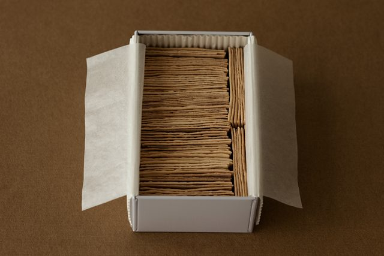

- 사진 없음
글자로 찾기
10.02 오후히로사키 (JR 16:51 전)
히로사키에서만 넉넉히 파는 것. 아오모리 시내에서는 못 찾았다.
10.02 밤 · 10.03역 빌딩 라비나 · ＆LOVINA
역 0분 · 20:00까지. 간식은 거의 1층 ふーどぎゃらりー あおのや(아오노야) 한 곳에서 끝난다.
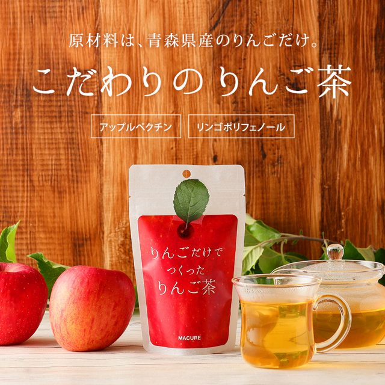
りんごだけでつくった
링고다케데 츠쿳타 링고차 · 사과로만 만든 사과차
りんご茶봉투에 사과 그림과 MACURE(마큐레). 티백 5개. 카페인 없음. 못 찾으면 위 일본어를 직원에게 보여 준다.

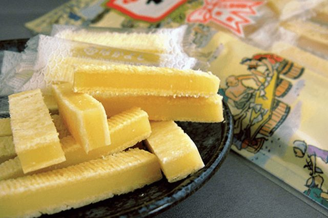
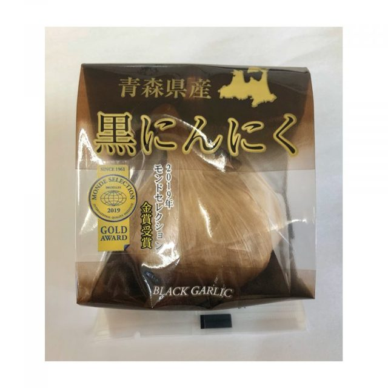
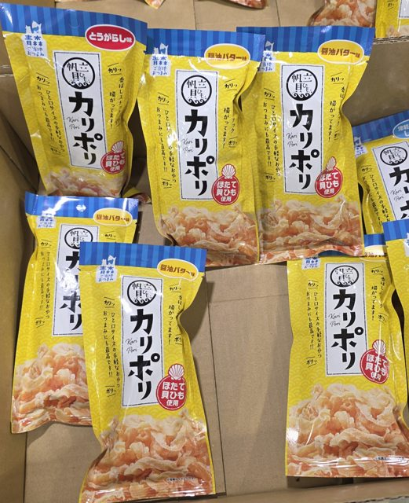
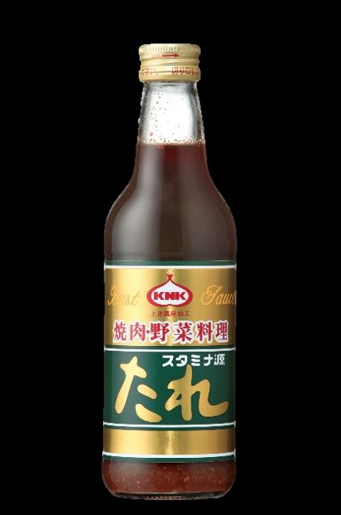
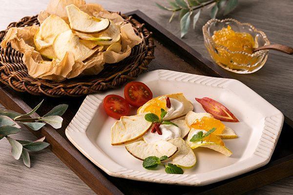
- 사진 없음
글자로 찾기 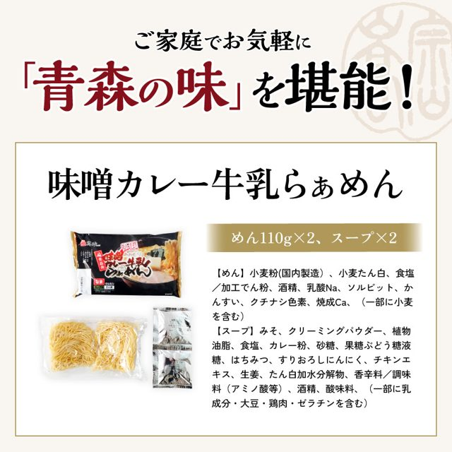

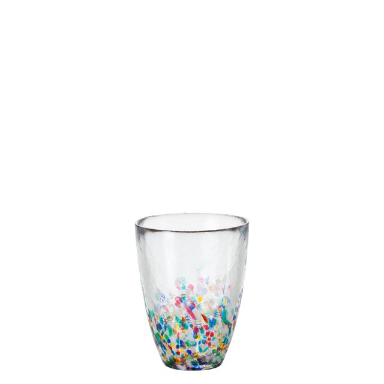

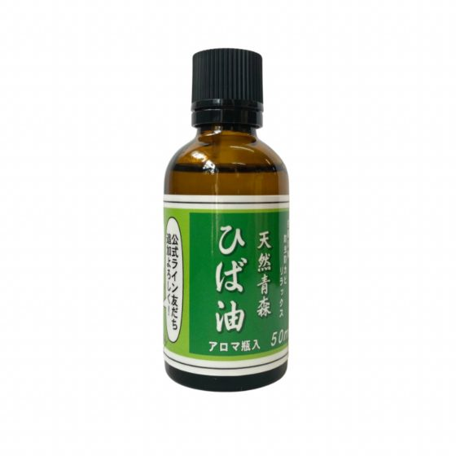
10.03아스팜 (역 도보 12분)
라비나에 없는 것이 여기 있다. 9:00~19:00.
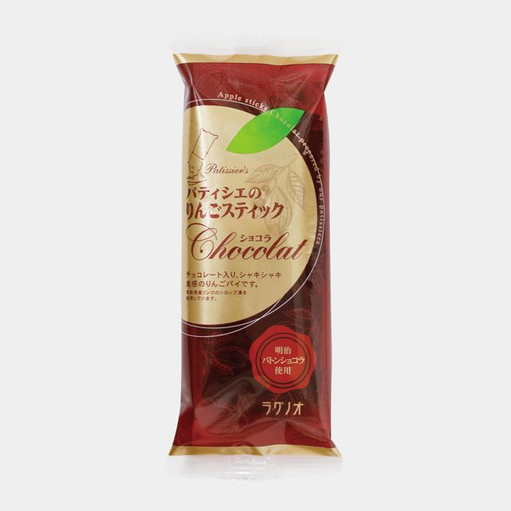
パティシエの
파티시에노 링고스틱쿠 쇼콜라 · 사과스틱 초콜릿판
りんごスティック ショコラ2026-08 아스팜 현장 랭킹 1위. 초콜릿판은 아스팜에서만 확인됐다. 개별 포장 4본입.
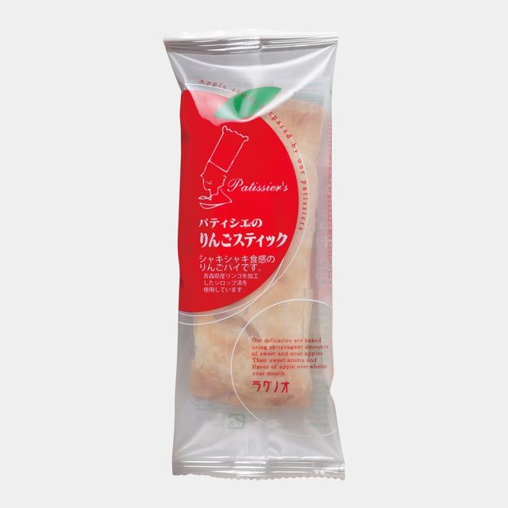
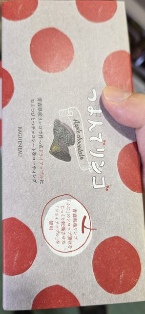
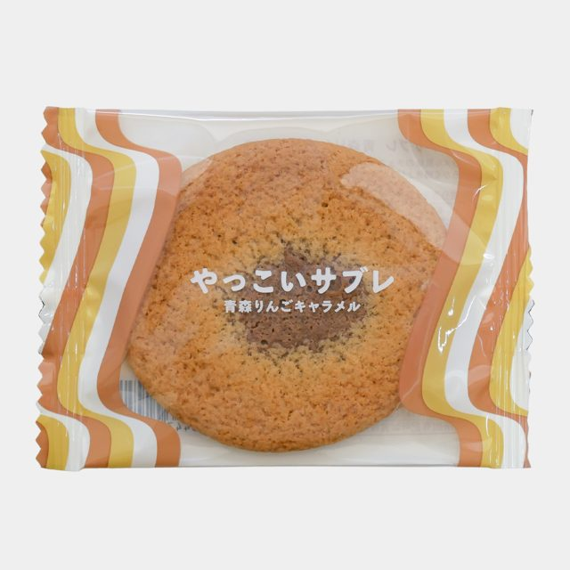
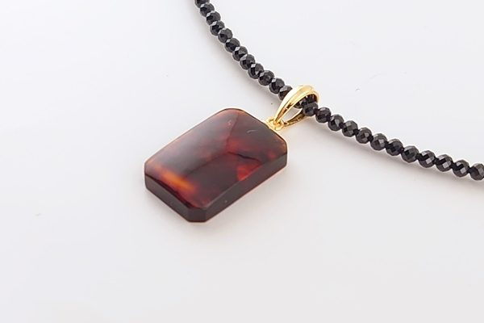


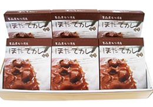

10.03와랏세 관내 숍 (역 도보 4분)
3일차 첫 지점. 9:00~18:30.

빠짐구로이시에서만 파는 것
구로이시를 떠나 이번엔 빠진다. 다른 곳에서는 안 판다.
기대를 낮출 것 · 안 사는 것
- チョコQ助 (초코 큐스케) 완매가 잦다. 9/1 그랑프리 발표 직후라 수요가 몰려 있다. 라비나 아오노야에서 보이면 그 자리에서 사고, 없으면 미련을 버린다.
- 津軽びいどろ 네부타 텀블러 아스팜 온라인이 「入荷待ち」(입하 대기)다. 매장에도 없을 수 있다.
- 술 전부 · 1L 유리병 주스 술은 뺐다. 주스는 무게가 곧 손해라 종이팩이나 280ml 페트로.
기내 · 위탁
돌아올 때 위탁 23kg 1개 · 기내 10kg
고체
사과차, 사과 과자 전부, 마늘 계열, 말린 가리비, 코긴자시, 히바, 금붕어 네부타, 호박.
액체 · 100ml 규정
라멘·카레·국물 계열 전부, 겐타레, 네부타즈케. 공항 면세점은 소규모이고 4일차는 09:50 버스라 「면세점에서 사서 기내로」 경로가 없습니다.
生のりんご · 술
생사과는 한국 반입 금지입니다. 식물검역 대상이고 미신고 시 최고 500만원에 폐기. 현지에서 먹는 것으로 끝냅니다. 술은 전부 제외했습니다.
완충재
츠가루비드로만 해당합니다. 옷 사이에 끼우는 것으로 됩니다. 아스팜 왕복 뒤 마지막에 사야 들고 다니는 구간이 줄어듭니다.